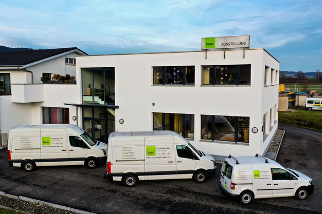
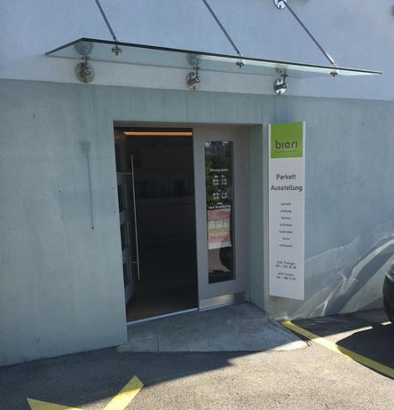

Küchen
Bieri Küchen als eigener Schwerpunkt.
Fredy Bieri AG · Schötz
Küchen, Möbel und Innenausbau aus der Schreinerei.
Räume entdecken
Schötz / TriengenFür Zuhause und mehr
Bieri Küchen als eigener Schwerpunkt.
Stauraum und Einrichtung.
Schreinerarbeiten im Bad.

Böden & Ausbau
Parkett, Laminat und Vinyl gehören ebenso zum Angebot wie Umbauten sowie Gastro- und Ladenbau.
Kontakt
Wir freuen uns auf Ihre Anfrage.